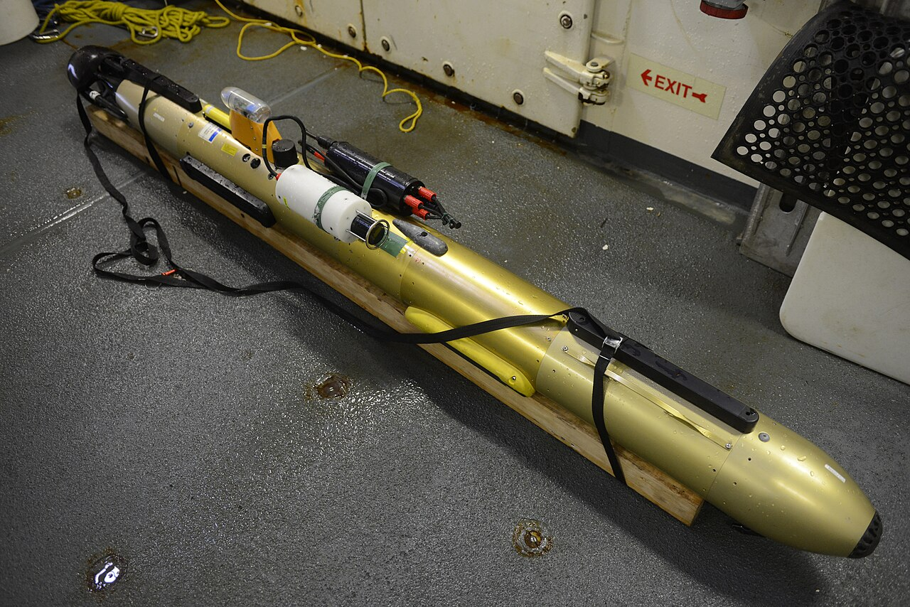
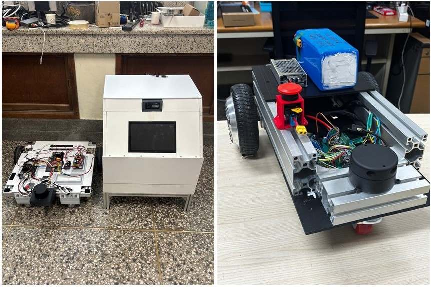
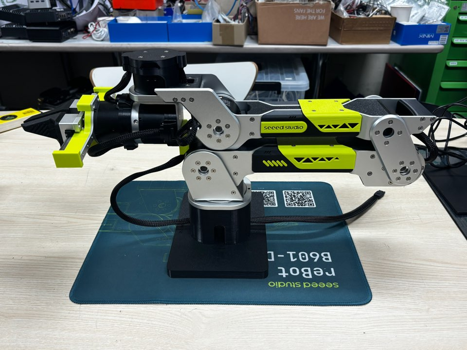
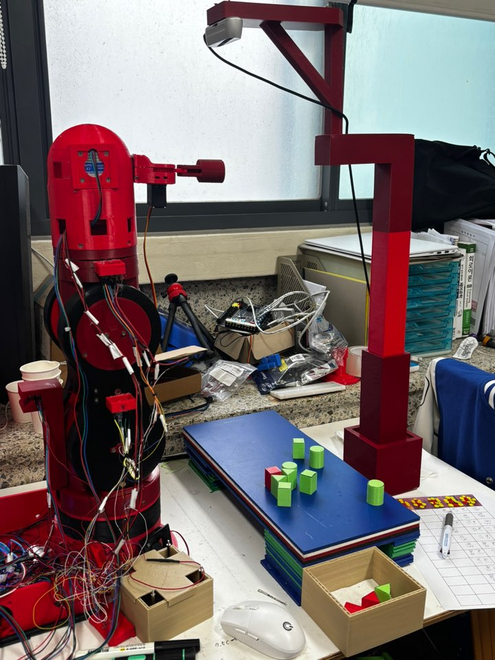
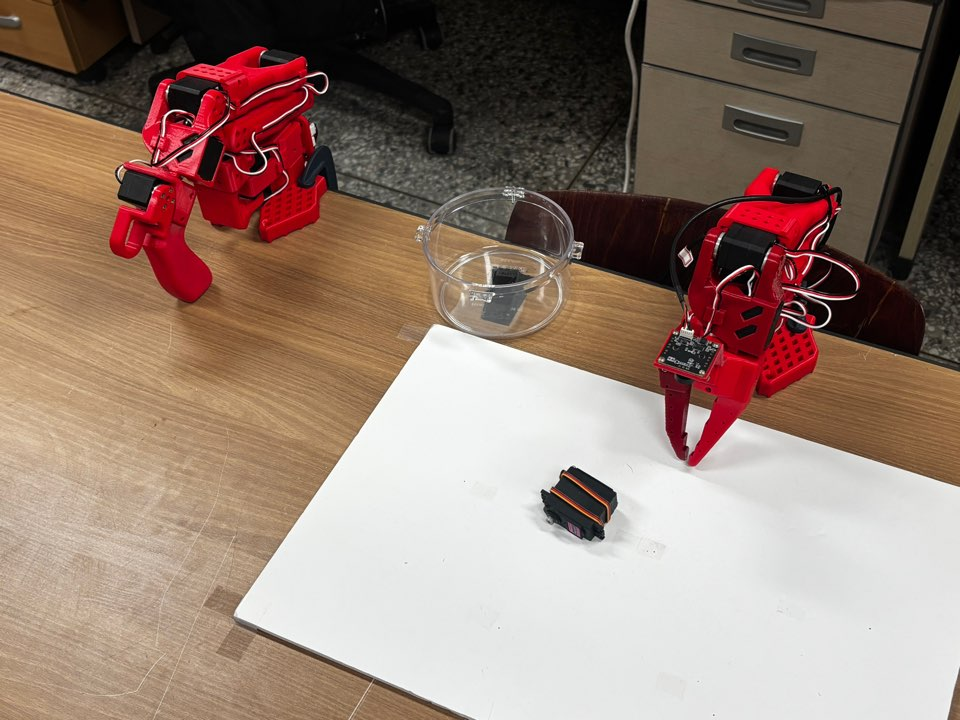

CAL
CAL
Control System Design
Active Disturbance Rejection Control (ADRC), Sliding Mode Control (SMC) 등 제어기를 설계하고, 시뮬레이션으로 성능을 검증합니다.

Active Disturbance Rejection Control (ADRC), Sliding Mode Control (SMC) 등 제어기를 설계하고, 시뮬레이션으로 성능을 검증합니다.

로봇 팔과 모바일 로봇을 대상으로 강화학습·모방학습 기반 조작과 ROS 기반 자율주행을 연구합니다.

장면 문자 인식, VLM 기반 이상 탐지 등 영상 인식을 연구합니다. 준지도 학습 기반 미세조직 이미지 분할과 양식장 어류 크기 측정 연구를 수행해 왔습니다.
로봇 팔, 자율주행 모바일 로봇, 3D 프린터 등 연구에 필요한 장비를 갖추고 있습니다. 해 보고 싶은 연구가 있다면 언제든 문을 두드려 주세요.




지금 수행하고 있는 과제 4건입니다. 1993년부터 과제 49건을 마쳤습니다.